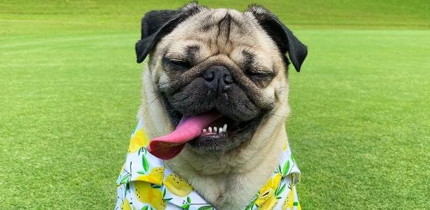
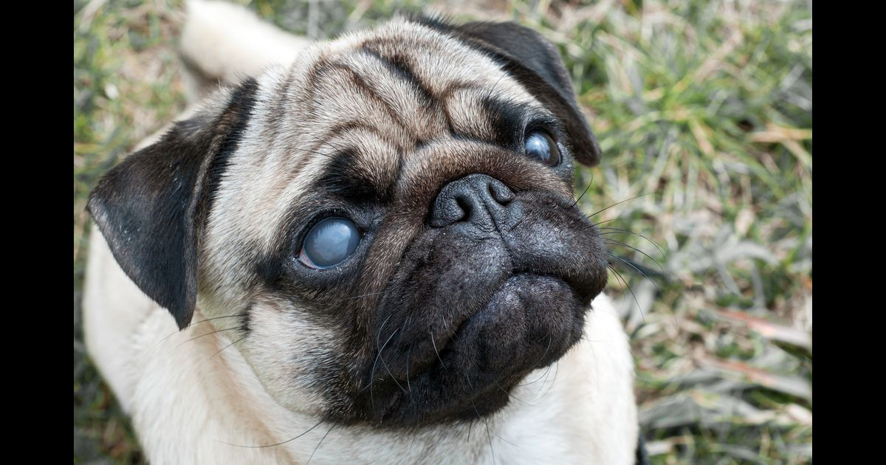
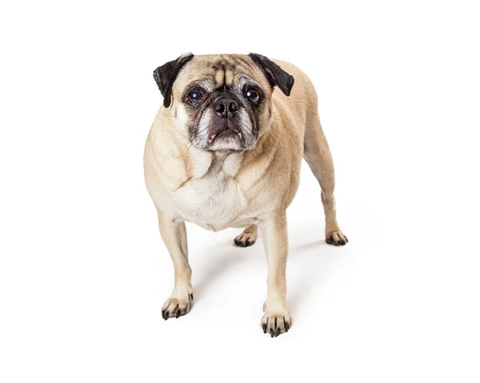
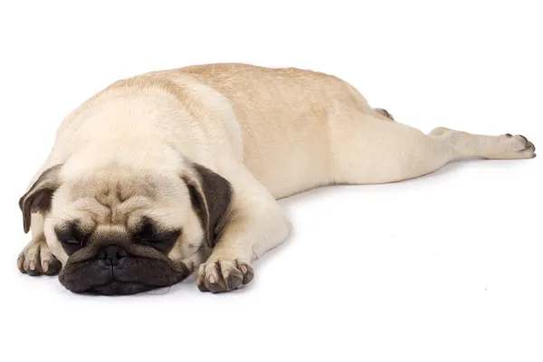

Amora
Idade: 6 anos
Caracteristicas:
Forte e incrivel
A Amora é um doce de aumiga. Ela foi abandonada pelo antigo dono pois
ficou cega, mas o amor que ela tem pelas pessoas e por carinho é
lindo. Mesmo com a vida bastante difícil por conta de não enxergar,
ela é um amor de cachorro. Ela ama um carinho e não é bagunceira.
Gosta de tirar um cochilo no final da tarde e está ansiosa para um
novo lar.



